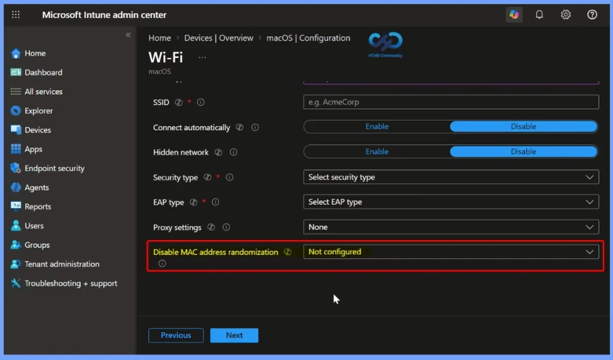
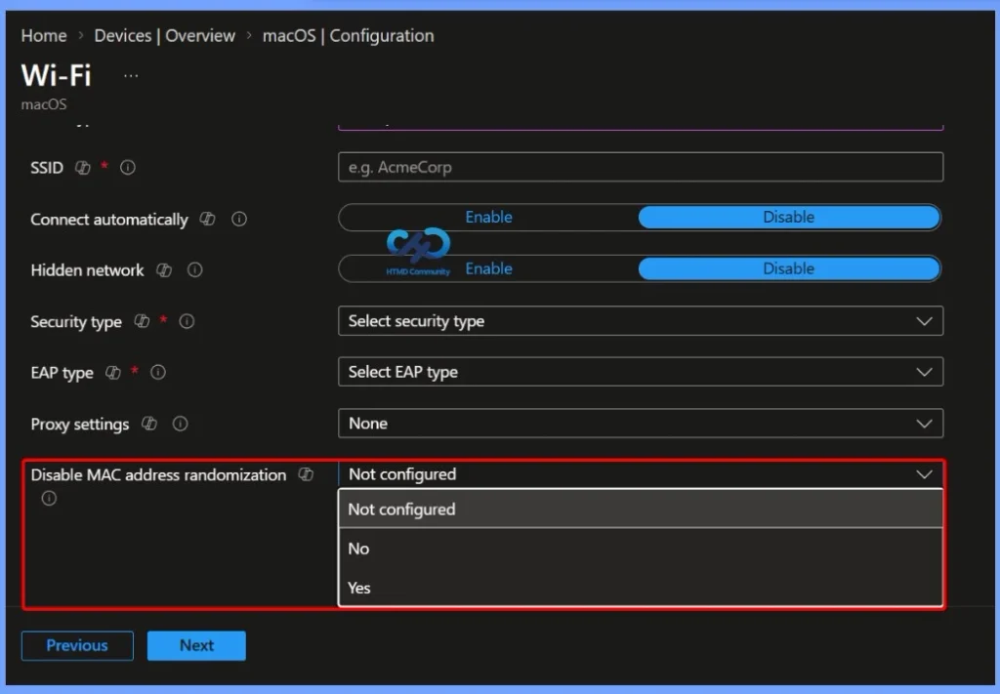

Key Takeaways
- Disables MAC address randomization on managed macOS devices.
- Makes the Mac use its actual/physical MAC address when connecting to Wi-Fi.
- Helps organizations that use MAC addresses for device identification or network access control (NAC).
- Randomized MAC addresses improve privacy by making device tracking more difficult.
- Disabling randomization may be required when the network depends on a fixed MAC address.
- The setting can be configured through Wi-Fi profiles in Microsoft Intune.
Disable Randomized MAC Addresses for Wi-Fi on macOS Devices! The Disable MAC Address Randomization setting in Microsoft Intune allows administrators to configure managed macOS devices to use their actual physical MAC address when connecting to Wi-Fi. Normally, macOS may use a randomized MAC address to improve user privacy and make device tracking more difficult.
Table of Content
Disable Randomized MAC Addresses for Wi-Fi on macOS Devices
This setting is useful for organisations where the network relies on a fixed MAC address for device identification, authentication, or Network Access Control (NAC). Disabling MAC randomisation helps ensure the device consistently presents the same MAC address when connecting to the managed Wi-Fi network.
- Sign in to the Microsoft Intune admin center.
- Select Devices > macOS > Configuration > Create > New policy.
- Enter the following properties:
- Platform: Select the platform of your devices. Your options:
- macOS
- Profile type: Select Wi-Fi. Or, select Templates > Wi-Fi.

Configure MAC Address Randomization for macOS Wi-Fi
In the macOS Wi-Fi configuration profile in Microsoft Intune, the Disable MAC address randomisation setting lets administrators control whether Mac devices use a randomised or physical MAC address when connecting to Wi-Fi. The available options are Not configured, No, and Yes. Select Yes when you want the managed Mac to use its physical MAC address, which can help with network identification and NAC requirements.
- It is a unique identifier for the device’s network adapter.
- Instead of using the device’s real MAC address, macOS may use a different/randomized address when connecting to Wi-Fi.
- It improves privacy because Wi-Fi networks cannot easily identify or track the device using its permanent MAC address.
- Some company networks need the real, fixed MAC address to identify and allow a specific device.
- Network Access Control (NAC) may use the MAC address to determine whether a device is allowed to access the network.
- A randomized MAC address can cause this identification to fail.
- The Disable MAC Address Randomization setting allows administrators to make managed Mac devices use their physical MAC address for the Wi-Fi connection.

Resources
In development – Microsoft Intune | Microsoft Learn
Need Further Assistance or Have Technical Questions?
Join the LinkedIn Page and Telegram group to get the latest step-by-step guides and news updates. Join our Meetup Page to participate in User group meetings. Also, join the WhatsApp Community and the Whatsapp channel to get the latest news on Microsoft Technologies. We are there on Reddit as well.
Author
Anoop C Nair is Workplace Technology solution architect with 25+ years of experience in global enterprise organizations such as JP Morgan, Capgemini, etc. He is Microsoft Certified Trainer. Microsoft MVP from 2015 onwards for consecutive 11 years! He also conducts Intune and modern workplace tech training for enterprise organizations. He is Blogger, Speaker, and Founder of HTMD Community and HTMD Conference. His focus is on Device Management technologies such as Intune, Windows, Cloud PC. He writes about technologies like Intune, SCCM, Windows, Cloud PC, Windows, Entra, Microsoft Security.